| Josias Abner Rivas Fuentes | RF20010 |
| David Alejandro Deras Cerros | DC19019 |
| Elmer Edenilson Rosales Molina | RM20001 |
Este informe reconstruye y verifica el estado del segmentador de hojas de Doctor Maíz a partir del código, la documentación técnica, los manifiestos de resultados y los artefactos disponibles en el repositorio corn-leaf-desease-project. Su responsabilidad es aislar tejido foliar mediante segmentación de instancias de una sola clase, maize_leaf, antes de entregar una imagen al clasificador. El sistema no diagnostica enfermedades: produce una máscara, selecciona una hoja objetivo y decide si la salida puede usarse o si debe conservarse la imagen original.
El dataset de entrenamiento documentado contiene 1,155 imágenes y 1,224 máscaras, derivadas de dos fuentes externas auditadas. Las particiones congeladas son 809/173/173 imágenes para train, validación y test. La asignación une duplicados exactos, variantes Roboflow y vecinos perceptuales en 1,035 grupos indivisibles; las verificaciones registradas reportan cero cruces entre splits y cero coincidencias con el piloto externo de 100 imágenes. La cadena incluye revisión humana, normalización JPEG trazable, fingerprints SHA-256, preflight local, empaquetado cloud y guards separados para smoke, entrenamiento, reanudación y test.
El baseline C-01, yolo26n-seg con semilla 42, alcanzó un pico de Mask mAP50-95 de 0.93806 en validación. La ablación D-01 desactivó únicamente mosaic, se ejecutó en una GPU A10 y seleccionó la época 115 después de 145 épocas. Su checkpoint obtuvo 0.99424 de precisión de máscara, 0.94309 de recall, 0.97326 de mAP50 y 0.94404 de mAP50-95. En 150 imágenes de validación procedentes de la fuente de enfermedades, el pipeline real de D-01 produjo 150 salidas reliable, IoU medio 0.98122, Dice 0.99046, recall de píxel foliar 0.99375 y cero fallbacks.
También se audita una corrida masiva posterior sobre 33,437 imágenes del corpus de clasificación. Esa ejecución usó el checkpoint C-01, no D-01. Procesó todos los archivos sin errores de ejecución: 28,360 salidas fueron reliable (84.82%), 1,057 uncertain (3.16%) y 4,020 failed (12.02%). El fallback conservó la imagen completa en 5,077 casos. La cobertura varió fuertemente por clase: 95.53% en tizón norteño frente a 52.65% en cogollero. Como ese corpus no contiene máscaras de verdad de referencia, estas tasas describen aceptación por el gate y no exactitud de segmentación.
El estado metodológico aún no permite declarar un modelo final. D-01 se probó con una sola semilla; el test interno permanece bloqueado porque Ultralytics interpreta 183 polígonos canónicos como 182 instancias efectivas; el piloto externo no se ha consumido; y los outputs canónicos de D-01 y el dataset congelado no están presentes en este checkout. La revisión de software sí pudo ejecutar 353 pruebas: 349 aprobaron y cuatro fallaron exclusivamente por esos datos ausentes; ruff check aprobó. El resultado es un segmentador funcional y cuidadosamente trazado, con evidencia prometedora en validación y una integración masiva operativa, pero con gates finales pendientes.
reliable en el corpus grande no es IoU, Dice ni precisión. Es la proporción que superó reglas automáticas de confianza, ambigüedad y geometría. La única evaluación cuantitativa con máscaras de referencia que se reporta para el pipeline D-01 corresponde a 150 imágenes de validación.Palabras clave: segmentación de instancias, hojas de maíz, YOLO26, quality gate, trazabilidad, inferencia reproducible.
Un clasificador foliar puede aprender tanto la enfermedad como elementos accidentales del fondo, la escala de captura o la forma de encuadrar una hoja. El segmentador aborda una parte concreta de ese riesgo: identificar el contorno de la hoja y neutralizar los píxeles externos antes del diagnóstico. Esta separación de responsabilidades es deliberada. El repositorio del segmentador no contiene entrenamiento, inferencia ni explicabilidad del clasificador; su salida es una imagen preprocesada y un conjunto de metadatos que otro componente puede consumir.
La tarea elegida es segmentación de instancias. A diferencia de una caja, una máscara conserva la silueta irregular de la hoja y permite retirar fondo sin cortar todo el rectángulo circundante. A diferencia de una máscara semántica única, las instancias separadas permiten razonar sobre fotografías con varias hojas y escoger una objetivo. Los modelos -seg de Ultralytics producen máscaras, clases y niveles de confianza por instancia [2]. El proyecto reduce esa salida general a una clase maize_leaf y añade una política propia de selección y confiabilidad.
Esta decisión introduce una tensión importante. Recortar tejido enfermo destruye información que el clasificador ya no puede recuperar; conservar algo de fondo suele ser menos irreversible. Por esa razón, las métricas downstream priorizan recall de píxel de hoja y subsegmentación antes que precisión de píxel. El fallback también es conservador: cuando la máscara falla o resulta incierta, el sistema entrega la imagen original en vez de publicar una segmentación dudosa como válida.
El trabajo se apoya en dos planos de evidencia. El primero es el experimento controlado: dataset segmentado, splits sin fuga, entrenamiento de C-01 y D-01, y evaluación con ground truth. El segundo es la operación sobre el corpus de clasificación: 33,437 entradas, artefactos por imagen, estados del quality gate y exportación de 28,360 salidas confiables. Confundir ambos planos llevaría a conclusiones incorrectas. El experimento estima exactitud en validación; la operación masiva mide cobertura y comportamiento del gate en un dominio mayor.
El informe adopta una disciplina cercana a una model card [5] y una datasheet [6]: declara procedencia, configuración, población evaluada, limitaciones y usos no autorizados. Los números se toman de archivos estructurados o documentación respaldada por hashes. Cuando el artefacto primario no está en el checkout actual, se identifica expresamente como evidencia documental no reejecutada.
Las primeras secciones definen objetivos, alcance y arquitectura. Luego se describen las fuentes, la consolidación, los splits, el preflight y el entrenamiento cloud. Las secciones centrales estudian D-01, la inferencia, la selección de instancia y el quality gate. Después se analizan la evaluación downstream y la corrida completa. El cierre revisa integración con el clasificador, reproducibilidad, calidad de software, riesgos éticos, limitaciones y gates pendientes.
Documentar de forma reproducible el diseño, los datos, el entrenamiento, la evaluación y la integración del segmentador de hojas de Doctor Maíz, distinguiendo la evidencia experimental con máscaras de referencia de la evidencia operativa producida sobre el corpus completo de clasificación.
mosaic=0.0, sin presentar validación como test final.uncertain o failed.La auditoría corresponde al commit 985a920c5f3028ee81a7e0f7cd32507fa9b337c5 de la rama master, fechado el 17 de agosto de 2026. La corrida completa conserva el mismo commit en run_metadata.json, fue iniciada el 27 de agosto y reanudada hasta finalizar el 28 de agosto. La exportación para el clasificador registra fecha del 8 de septiembre. El checkout estaba dirty: faltaba el notebook de EDA y estaban sin seguimiento los módulos y pruebas de inferencia masiva. El informe trata esos archivos como parte del estado inspeccionado, pero no los confunde con contenido comprometido en Git.
| Nivel | Evidencia | Uso | Restricción |
|---|---|---|---|
| Primario | summary.json, run_metadata.json, manifest.csv, checkpoint C-01 | Corrida masiva, configuración, hashes y tiempos | No contiene ground truth de máscaras |
| Primario documentado | Resumen D-01, results.csv y evaluación downstream citados por la documentación | Métricas de entrenamiento y validación | Los archivos de output no están en el checkout actual |
| Canónico documentado | Locks, manifiestos y splits bajo data/leaf_detection | Composición y prevención de fugas | El árbol data/leaf_detection está vacío en esta copia |
| Código | Grafo Codebase Memory y snippets de src/ | Arquitectura, contratos, fallbacks y validaciones | Describe comportamiento implementado, no resultados empíricos |
| Pruebas | pytest y ruff ejecutados en el entorno local | Estado del software | Cuatro pruebas requieren datos canónicos ausentes |
El repositorio fue indexado con Codebase Memory en modo completo. El grafo obtenido contiene 2,271 nodos y 9,964 relaciones, con 764 funciones, 331 métodos, 103 clases y 160 archivos. Se utilizaron búsquedas estructurales para ubicar símbolos y trazas, y lectura directa sólo para documentos, YAML, JSON, CSV y otros artefactos no cubiertos por el grafo. Esta estrategia reduce el riesgo de inferir arquitectura únicamente a partir de nombres de carpetas.
No se entrenó ni reanudó un modelo, no se abrió el test interno, no se ejecutó el piloto externo y no se modificaron thresholds. Tampoco se reconstruyeron las fuentes externas o los splits ausentes. Esas acciones están protegidas por guards explícitos y algunas implican coste de GPU o consumo irreversible de conjuntos retenidos. El informe analiza la evidencia disponible sin ampliar esa autorización.
La corrida masiva sí permite análisis estadístico nuevo porque su manifiesto ya existe. Se calcularon tasas por clase, cuantiles de confianza, área y latencia sin cambiar los datos. Los gráficos se generan determinísticamente desde las 33,437 filas. Para evitar selección visual oportunista, el panel cualitativo utiliza identificadores fijados por reglas documentadas: un caso reliable cercano a la mediana de confianza y casos representativos de geometría sospechosa y ausencia de detección.
El diseño se organiza en capas que siguen el ciclo de vida de una máscara. src/data audita, consolida, revisa y divide el dataset; src/training valida locks, entorno y carga; cloud_training y modal_training.py controlan la ejecución remota; src/segmentation adapta Ultralytics y decide confiabilidad; src/preprocessing convierte máscaras en salidas; src/evaluation calcula métricas downstream; y src/inference ejecuta y exporta el corpus completo. Los scripts bajo scripts/ son fachadas CLI, mientras que el Makefile expone objetivos con guards.
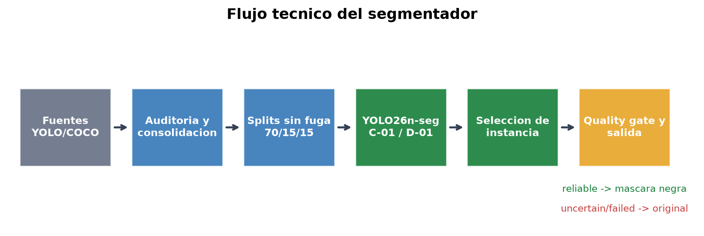
UltralyticsLeafSegmenter valida que el checkpoint exista, calcula su SHA-256 y carga el modelo de forma perezosa. Antes de crear YOLO, exige que la versión de runtime sea exactamente 8.4.104; una diferencia produce un error explícito. Cada imagen se normaliza a RGB y se envía con imgsz=640, confianza de propuesta 0.20, IoU NMS 0.70, máximo 20 detecciones, NMS por clase y retina_masks=True. El wrapper comprueba además que Ultralytics devuelva un único resultado y que su forma original coincida con la imagen.
El checkpoint operativo C-01 pesa 6,546,902 bytes, tiene SHA-256 4f66456d05d87f9e7080155eb5cd80c583f34849415ec820c950bd97f9c5ec6f y, cargado con el runtime fijado, declara tarea segment, escala n, una clase maize_leaf y 3,053,055 parámetros. La familia YOLO26 soporta cabezas para segmentación de instancias [1], pero el contrato real del proyecto está definido por ese archivo y su configuración, no por métricas genéricas de COCO.
SegmentedLeafProcessor.process invoca el segmentador, selecciona una instancia, genera máscara binaria a resolución original, aplica fondo negro y calcula el bbox. Admite cuatro perfiles: máscara a tamaño original, recorte rectangular, recorte con fondo negro y recorte con letterbox. El perfil vigente es mask_black; por lo tanto, conserva las dimensiones de entrada y neutraliza el exterior de la hoja con [0,0,0].
Si no existe una instancia elegible, _fallback devuelve la imagen original y registra la razón. Cuando hay una máscara, el resultado contiene original, máscara, imagen enmascarada, crop, bbox, confianza, cantidad de instancias, índice elegido, trazas de score, estrategia, warnings, procedencia y metadata del segmentador. Esta estructura permite que el quality gate decida después sin repetir inferencia.
run_full_dataset impide combinar modos incompatibles, no sobrescribe una salida existente y sólo reanuda un run sin summary.json. Al reanudar, compara dataset, inventario y procedencia con el run previo. Cada imagen se procesa dentro de un bloque de aislamiento: una excepción crea un archivo de error y no detiene el corpus. El pipeline guarda original enlazado, visualización de propuestas, máscara, overlay, imagen segmentada o fallback, thumbnails y un JSON por muestra. Al final genera manifiestos CSV/JSONL, resumen, galería y metadata de ejecución.
reliable, uncertain o failed no la toma directamente YOLO. Surge después de convertir propuestas, aplicar el selector y evaluar geometría y ambigüedad. Esto hace posible auditar por separado modelo, política de selección y política de publicación.El dataset del segmentador se construyó desde dos exportaciones externas que conservaban anotaciones YOLO y respaldo COCO. La primera, corn_leaf_diseases_classification, incluye máscaras de hoja y de lesiones; la segunda, corn, contiene una clase de hoja más simple. Ambas declaran licencia CC BY 4.0 en los metadatos archivados por el proyecto. COCO se utilizó como respaldo para contrastar imágenes, categorías y polígonos por instancia [3].
| Fuente | Imágenes | Líneas YOLO | Polígonos válidos | Rol aceptado | Decisión |
|---|---|---|---|---|---|
corn_leaf_diseases_classification | 1,003 | 14,415 | 14,395 | Sólo clase leaf | Aceptar con filtrado |
corn | 157 | 204 | 204 | Clase leaf | Aceptar con filtrado |
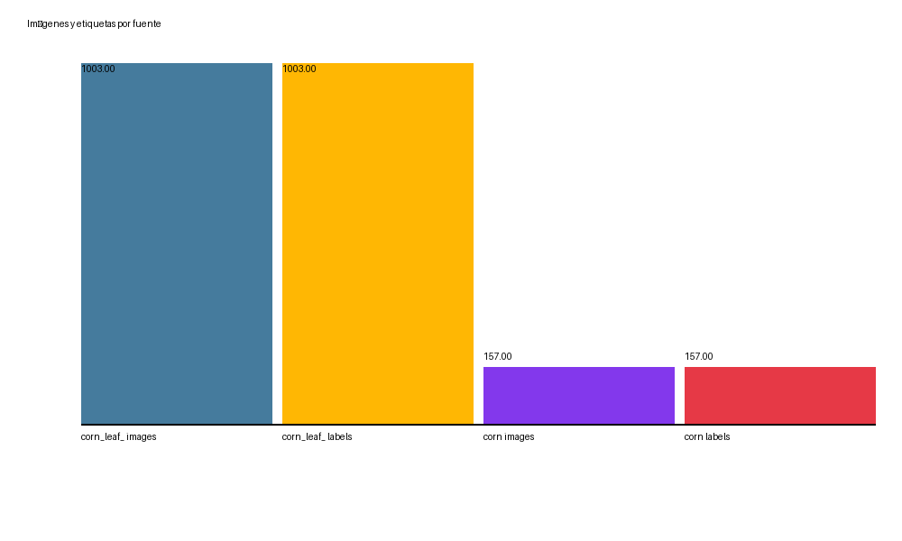
La auditoría no asumió que toda anotación de segmentación representaba una hoja. En la fuente grande identificó 11,301 líneas de gray_leaf_spot, 2,091 de northern_leaf_blight y 1,023 de leaf. Las dos primeras son lesiones internas y se excluyeron. Se detectaron 20 líneas inválidas: 11 eran cajas YOLO mezcladas dentro del export de segmentación, ocho eran polígonos autointersectados y una tenía un vértice repetido. La fuente pequeña presentaba un TXT vacío respaldado por una imagen COCO sin anotaciones.
La correspondencia YOLO–COCO permitió recuperar una única anotación de hoja expresada como bbox. La recuperación exigía coincidencia única de imagen, clase, rol semántico, caja equivalente con tolerancia 1e-5, polígono COCO válido y ausencia de alternativas. Las cajas correspondientes a lesiones se descartaron. No se reordenaron puntos ni se “repararon” polígonos ambiguos por intuición.
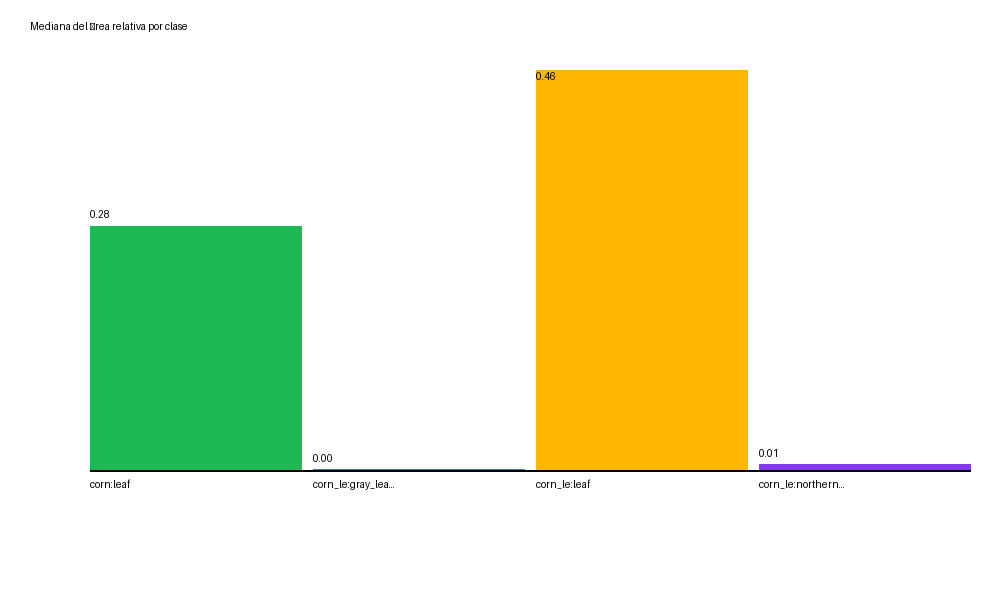
La geometría refuerza la necesidad de separar fuentes. La mediana de área relativa de leaf fue 0.460459 en la fuente grande y 0.280577 en corn. Además, 71.57% de los polígonos válidos de corn tocaban el borde, frente a 9.07% de todos los polígonos válidos de la fuente grande; esta última cifra está dominada por lesiones y debe interpretarse por clase. El resultado no justifica eliminar recortes de borde, porque pueden ser ejemplos reales importantes.
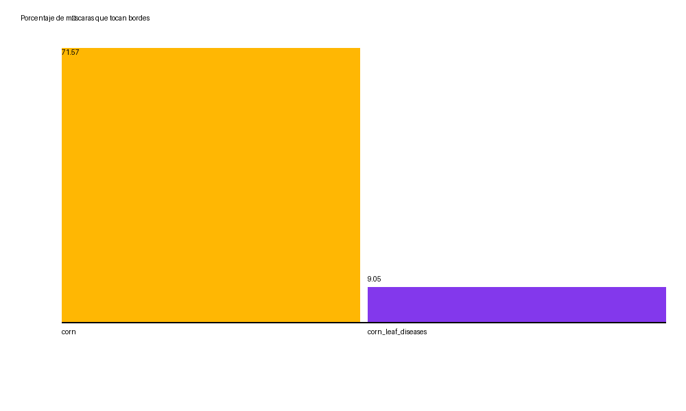
Se calcularon hashes SHA-256 para 1,160 imágenes candidatas y las 100 del piloto. No aparecieron duplicados exactos internos, cruzados o contra el piloto. El fingerprint global del EDA cubría 2,428 archivos y quedó registrado como 033db15c50a4ff2a23e5b152359dfb879b3c21b95a2f0bdd2742928e799a95ef. Esta capa de procedencia permite invalidar cachés si cambia cualquier imagen, TXT, COCO, configuración o versión del parser.
La consolidación materializó un pool derivado sin tocar las fuentes originales. Consideró 1,160 imágenes, excluyó casos sin hoja aceptable y conservó inicialmente 1,156 candidatas con 1,226 polígonos remapeados a 0 = maize_leaf. En total se retiraron 13,392 anotaciones de lesión. Cada fila mantuvo nombre original, fuente, hash, licencia, clase previa, método de recuperación, estado de calidad y grupo de variante.
El gate no cerró el dataset automáticamente. Se creó una cola humana de 35 casos únicos: 32 de una muestra visual estratificada, un TXT vacío, una hoja autointersectada y la anotación COCO recuperada extremadamente pequeña, con solapamientos entre listas. Los previews resolvieron geometría desde YOLO, COCO, el manifiesto de recuperación y finalmente el consolidado. El registro final documenta 16 decisiones approved, 16 exclude y tres casos que debían reanotarse; quedaron cero pendientes y cero contradicciones.
Después de aplicar esas decisiones, el padre congelado contiene 1,155 imágenes, 1,155 TXT y 1,224 máscaras. Una imagen JPEG era decodificable pero carecía de marcador EOI. La copia derivada añadió FF D9 sin recodificar: cambió el hash binario, pero mantuvo el hash de píxeles RGB d63697cd3d48aef376302d841baaae2a666fd200d39c05955a8173ee740f70c6. Esta corrección quedó registrada en image_normalization_manifest.csv y no alteró identidad lógica ni asignación.
| Control | Resultado |
|---|---|
| Imágenes finales | 1,155 |
| Archivos TXT | 1,155 |
Máscaras maize_leaf | 1,224 |
| Clases finales | 1 |
| Anotaciones de lesión excluidas | 13,392 |
| Casos humanos únicos | 35 |
| Casos pendientes al cierre | 0 |
| Duplicados exactos detectados | 0 |
| Cruces exactos con piloto | 0 |
El fingerprint del padre final es 7a4a5c083fc64b067df12bcc95ec976d5a7e3b8a585d0a090b6b3940af4d7d5c. El lock cambia a ready_for_split_generation sólo cuando conteos, decisiones y hashes concuerdan. La función validate_consolidated_dataset reabre imágenes, vuelve a parsear polígonos y comprueba clase, coordenadas, topología y correspondencia. El valor del lock no es decorativo: los pasos de split y preflight lo recalculan antes de continuar.
La división utiliza semilla 42 y proporciones objetivo 70/15/15. No asigna archivos independientemente. Primero construye componentes conexos con cinco señales: SHA-256 exacto, grupo de duplicado, grupo de variante Roboflow, combinación de fuente y nombre original, y hash perceptual promedio de 64 bits con distancia Hamming máxima de cuatro. Si dos imágenes se relacionan por cualquiera de esas señales, sus componentes se unen y permanecen en un mismo split.
La implementación build_split_groups ordena por nombre, aplica union-find para coincidencias exactas y compara hashes perceptuales por pares. Las 1,155 imágenes forman 1,035 grupos, con tamaño máximo 12. assign_groups_to_splits ordena primero grupos grandes y raros, minimiza un costo multivariado y penaliza el desbordamiento de los conteos objetivo. El balance considera imágenes, máscaras, fuente, orientación, resolución y bins de área; un refinamiento posterior intercambia grupos del mismo tamaño cuando reduce el costo.
| Split | Imágenes | Proporción real | Máscaras | Grupos | Fuente corn | Fuente grande |
|---|---|---|---|---|---|---|
| Train | 809 | 70.0433% | 858 | 724 | 109 | 700 |
| Validación | 173 | 14.9784% | 183 | 156 | 23 | 150 |
| Test | 173 | 14.9784% | 183 | 155 | 23 | 150 |
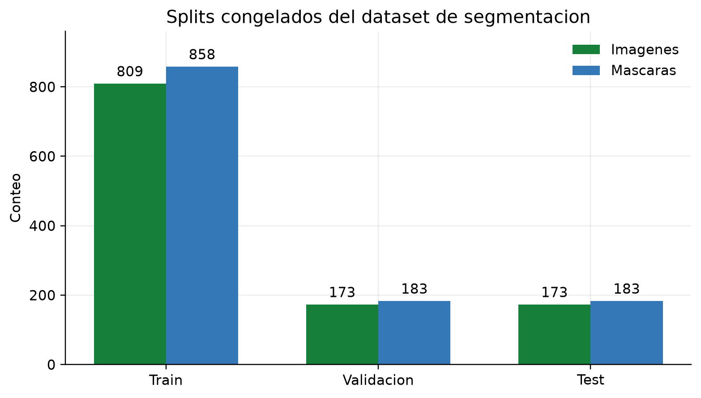
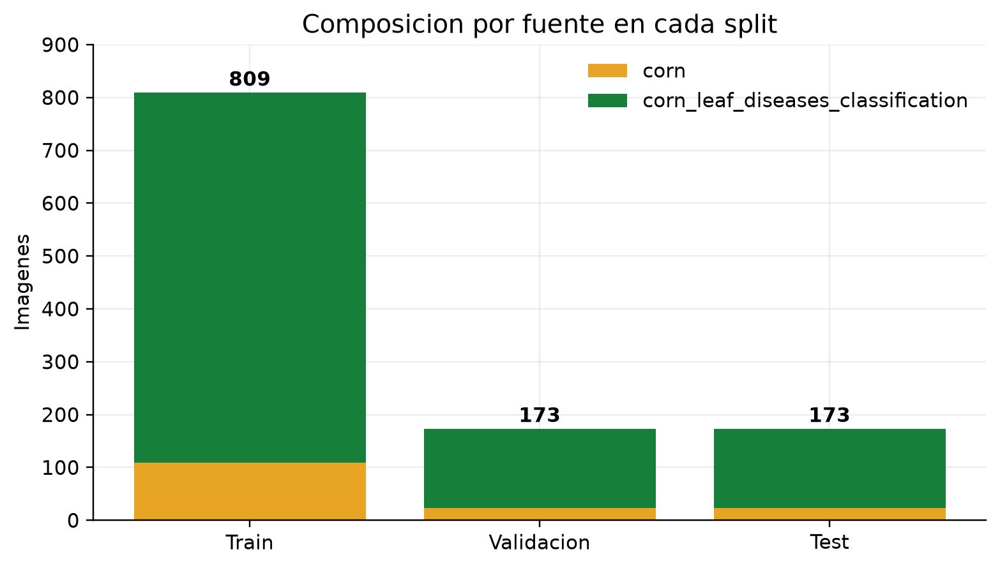
Los fingerprints son 06035eed…d29ba para train, 3c7bf7ab…4e720 para validación, 04654535…89c51 para test y 96833e43…0c0e1 para la asignación combinada. El validador registró cero hashes, grupos, variantes Roboflow o vecinos perceptuales compartidos entre splits; también cero cruces exactos, nominales, por base o perceptuales con el piloto.
La generación se repitió dos veces en directorios temporales y produjo asignaciones y fingerprints idénticos. La reconstrucción posterior tomó filename → split como contrato y verificó cero cambios en los 1,155 nombres. Los JPEG canónicos de all/images y los tres splits pasaron marcador EOI, Image.verify(), carga completa y el checker real de Ultralytics 8.4.104 sin cambios de hash.
El test de 173 imágenes pertenece a las mismas dos fuentes consolidadas, pero permanece retenido para una sola evaluación después de congelar configuración y semillas. El piloto de 100 imágenes es externo a train, validación y test: sirve únicamente como auditoría cualitativa final. Esta separación evita usar el conjunto más independiente para seleccionar thresholds o corregir el modelo.
data/leaf_detection en la copia inspeccionada. Sus hashes y conteos sobreviven en documentación y en el manifiesto del paquete cloud, pero la verificación local completa requiere restaurar los datos canónicos.El preflight local está diseñado como auditoría no destructiva. Recalcula locks, valida el dataset, inspecciona dependencias y hardware, revisa la compatibilidad del modelo candidato y rasteriza un batch de humo. También genera una configuración recomendada y el comando exacto, pero registra contadores de seguridad en cero para modelos construidos, forward, backward, pasos de optimizador, épocas, checkpoints, descargas e instalaciones.
En la ejecución documentada, el dataset y el loader aprobaron: se validaron 809/173/173 imágenes, 858/183/183 máscaras y 1,224 polígonos de una sola clase. El batch de humo reunió cuatro muestras de train, dos de validación y dos de test, con tensores finitos [8,3,640,640] y [8,1,640,640]. El estado local fue blocked_by_missing_dependency porque Ultralytics y los pesos iniciales no estaban instalados y CUDA no estaba disponible. Ese bloqueo no invalidó los datos; trasladó el entrenamiento a un entorno remoto autorizado.
El paquete cloud incluye únicamente los splits, dataset.yaml, cinco manifiestos necesarios, código, scripts y documentación mínima. Excluye el padre all/, fuentes externas, piloto, notebooks, entornos, cachés, outputs históricos y checkpoints. Un manifiesto separado describe el transporte del piloto y marca included_in_training_package=false.
El bootstrap fija ultralytics==8.4.104 y faster-coco-eval==1.7.2, toma PyTorch y torchvision CUDA de la plataforma y ejecuta un pip --dry-run. Si el resolver intenta sustituir esas dos bibliotecas, el proceso se bloquea. El preflight remoto vuelve a verificar hashes, GPU, pesos y un forward sintético del head de segmentación.
| Operación | Confirmación o condición | Resultado documentado |
|---|---|---|
| Bootstrap | Resolver compatible, sin reemplazar PyTorch | Aprobado |
| Preflight cloud | GPU, locks, pesos y forward | Aprobado |
| Smoke | CONFIRM_SEGMENTATION_SMOKE_TRAINING=1 | Aprobado, batch 26 |
| Entrenamiento | CONFIRM_SEGMENTATION_TRAINING=1 | C-01 y D-01 completados |
| Reanudación | Confirmación de entrenamiento y motivo | Disponible, no automática |
| Test | Split efectivo, conteos y checkpoint congelado | Bloqueado |
| Piloto externo | Test aprobado y pilot-gate | No ejecutado |
El uso de guards separados reduce el riesgo de que una comprobación inocua inicie épocas con coste. Los resultados se escriben en almacenamiento persistente y cada experimento tiene nombre propio. El runner exige que una corrida no sobrescriba otra y conserva configuración efectiva, checkpoints, curvas, resumen, entorno, duración y VRAM.
Ultralytics 8.4.104 deduplica etiquetas por combinación de clase y bbox. En test existen dos polígonos diferentes que ocupan el marco completo y comparten esa clave; por eso 183 anotaciones raw se convierten en 182 instancias efectivas. El runner detecta la diferencia y bloquea el resumen, en vez de aceptar silenciosamente una población distinta. Resolver este contrato exige una decisión sobre datos o evaluación, no relajar la aserción para obtener un número.
La arquitectura elegida es yolo26n-seg, variante nano de segmentación de instancias de la familia YOLO26 [1]. El checkpoint inicial preentrenado sirve como punto de partida; la tarea del proyecto se redefine a una clase maize_leaf. La configuración base usa imgsz=640, máximo 150 épocas, paciencia 30, optimizador automático, semilla 42, ejecución determinista, ocho workers y caché desactivada en cloud.
El baseline C-01 se entrenó con batch 26. El registro de planificación identifica la mejor época como 87 y el pico de Mask mAP50-95 de validación como 0.93806. Su checkpoint es el archivo operacional outputs/leaf_detection/models/doctor_maiz_leaf_segmenter_best.pt, de 6.55 MB y hash 4f66456d…f9c5ec6f. Este es el modelo que posteriormente procesó el corpus de 33,437 imágenes.
El orden de selección de experimentos prioriza: recall medio de píxel foliar en imágenes de una hoja, Dice medio en ese mismo subconjunto, Mask mAP50-95 y precisión externa del quality gate. Esta jerarquía reconoce que la métrica nativa del detector no mide por sí sola la pérdida de tejido diagnóstico después del recorte.
| ID | Cambio principal | Estado registrado |
|---|---|---|
| D-01 | Desactivar mosaic | Completado |
| D-02 | Reducir entrada a 512 | Preparado |
| D-02B | Aumentar entrada a 768 | Requiere smoke específico |
| D-03 | Balance por fuente | Preparado |
| D-04 | Cambiar a yolo26s-seg | Requiere pesos verificados y smoke |
| D-05 | Entrenar desde cero | Preparado |
| D-06 | Activar copy-paste | Preparado |
| E-01 | Repetir ganador con semillas 7 y 1337 | Pendiente |
Cada perfil cambia una hipótesis concreta y conserva los splits. D-04 no descarga pesos implícitamente; exige registrar un yolo26s-seg.pt suministrado y verificable. D-02B requiere medir primero el batch porque la resolución incrementa memoria. La comparación de D-01 con C-01 comparte semilla 42, lo que aísla mejor el efecto de mosaic, pero todavía no estima variación entre semillas.
El protocolo exige escoger el ganador únicamente con validación, repetirlo con semillas 7, 42 y 1337, y reportar media y desviación estándar. La mejora debe superar la variación observada. Sólo entonces puede congelarse configuración y abrirse test una vez. Esta secuencia evita que una ganancia pequeña de una sola corrida se interprete como robusta.
4f66456d…; D-01 tiene hash a2bf4f20…. Toda métrica o inferencia del informe conserva el hash del checkpoint que realmente la produjo.D-01 mantiene arquitectura, dataset, splits, inicialización, semilla y presupuesto del baseline. El único cambio experimental es mosaic=0.0. La hipótesis es que componer imágenes artificiales puede perjudicar la continuidad del contorno de una hoja completa; desactivarlo podría mejorar la máscara sin introducir información del test.
La corrida se ejecutó en Modal sobre una GPU A10 entre 2026-08-17T18:04:41Z y 18:29:16Z. Usó batch 26, máximo 150 épocas y paciencia 30. La parada temprana terminó después de 145 épocas y seleccionó la época 115. La duración fue 1,475.71 segundos, aproximadamente 24 minutos 36 segundos, con pico de VRAM de 8,610,202,112 bytes, unos 8.02 GiB. El resumen marcó estado passed, test_included=false y pilot_included=false.
| Tarea | Precision | Recall | mAP50 | mAP50-95 |
|---|---|---|---|---|
| Máscara | 0.99424 | 0.94309 | 0.97326 | 0.94404 |
| Caja | 1.00000 | 0.94855 | 0.97979 | 0.94343 |
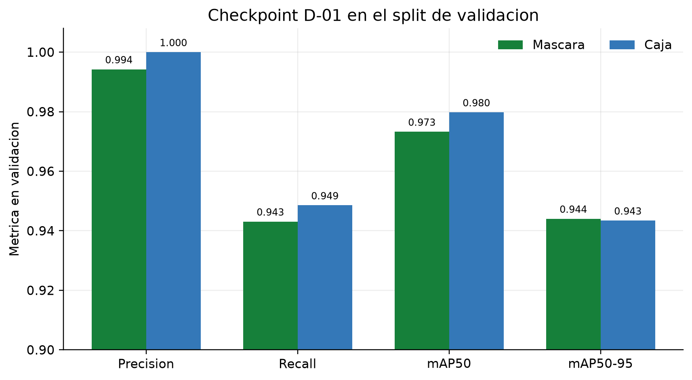
El pico de la curva de Mask mAP50-95 aumentó de 0.93806 en C-01 a 0.94399 en D-01. La diferencia es 0.00593, equivalente a 0.59 puntos porcentuales. La cifra 0.94399 corresponde al máximo por época de la curva; 0.94404 es el resultado reportado al validar el checkpoint ganador. La pequeña diferencia de agregación o redondeo se conserva en vez de forzar igualdad.
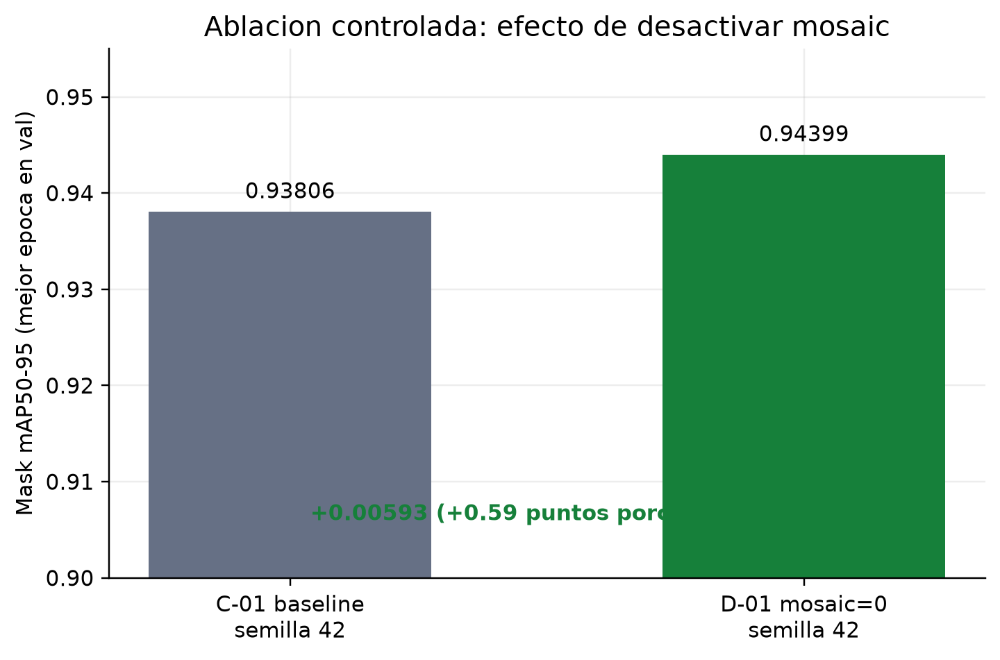
El paquete de la release v7 tiene SHA-256 a90f3f30…55b6; la configuración efectiva, 5238e445…e2d0fd; best.pt, a2bf4f20…cb8ab; y last.pt, 36c31bca…29842. El proyecto registró coincidencia entre el hash local y Modal. El nombre de output d01_mosaic0_seed42 evita sobrescribir el baseline.
Los outputs de D-01 descritos por la documentación —pesos, results.csv, configuración efectiva, resumen y evaluación— no están presentes en la copia actual. Por ello este informe no vuelve a graficar las curvas completas ni recalcula el checkpoint. Las métricas se consideran evidencia registrada, no una reejecución independiente.
El modelo puede devolver cero, una o varias propuestas. instances_from_ultralytics_result convierte cada máscara a resolución original, asocia confianza, bbox, clase e índice de procedencia, y rechaza desalineaciones entre cantidades. El selector no toma simplemente la primera detección: filtra evidencia inválida y calcula un score trazable.
Una propuesta es elegible si pertenece a la clase cero, tiene confianza finita al menos 0.50, cubre al menos 1% de la imagen, contiene una máscara no vacía y no cubre exactamente el 100% del marco. Las propuestas con confianza entre 0.20 y 0.50 se preservan en la predicción para auditoría, pero no pueden convertirse en hoja objetivo. Esta separación mantiene sensibilidad en la generación de candidatos sin relajar la aceptación.
Para cada instancia elegible se calcula área relativa respecto a la mayor, cercanía del centroide al centro de la imagen y confianza. El score vigente es:
score = 0.45 * area_relativa + 0.35 * cercania_centro + 0.20 * confianzaLa lista se ordena por score, área, confianza y, finalmente, por el menor índice original como desempate determinista. Cuando hay varias hojas, el resultado conserva todas las trazas y añade una advertencia. El selector no afirma que la hoja mayor sea siempre la más relevante para el diagnóstico; implementa una regla reproducible que debe contrastarse con el uso real.
| Parámetro | Valor | Función |
|---|---|---|
image_size | 640 | Entrada al modelo |
| Confianza de propuesta | 0.20 | Retener candidatos para auditoría |
| Confianza de selección | 0.50 | Aceptar candidato como hoja |
| IoU NMS | 0.70 | Suprimir propuestas solapadas |
| Máximo de detecciones | 20 | Limitar candidatos |
| Área mínima | 0.01 | Rechazar máscaras diminutas |
| Peso de área | 0.45 | Preferir hoja dominante |
| Peso de centro | 0.35 | Preferir objetivo centrado |
| Peso de confianza | 0.20 | Incorporar evidencia del modelo |
mask_black conserva el tamaño original y pone el fondo en negro; es el perfil activo. bbox_crop recorta la caja sin máscara; crop_mask_black recorta la región ya enmascarada; y crop_mask_letterbox ajusta ese recorte a un tamaño objetivo sin deformar proporciones. La corrida completa usa mask_black, de modo que las imágenes confiables mantienen resolución y encuadre, mientras el exterior queda neutralizado.
Si no hay selección, el resultado marca fallback_used=true, guarda la razón y entrega la imagen original. El fallo no desaparece: queda visible en status, warnings, metadata y rutas de artefactos. Este diseño favorece degradación controlada frente a una salida vacía o engañosa.
El quality gate transforma el resultado del procesador en tres estados. reliable significa que existe una instancia completa y no se activó ninguna regla de ambigüedad o geometría. uncertain conserva una máscara disponible, pero evita publicarla como salida final porque su evidencia es ambigua. failed indica fallback, evidencia incompleta, ausencia de detección, confianza insuficiente o máscara inválida.
| Regla | Valor | Resultado si se activa |
|---|---|---|
| Rechazar automáticamente varias elegibles | false | Se evalúa margen en vez de fallar por conteo |
| Área máxima de máscara | 0.999 | uncertain por área excesiva |
| Umbral de máscara grande | 0.25 | Habilita prueba geométrica combinada |
| Ocupación mínima dentro del bbox | 0.80 | Señal de máscara grande dispersa |
| Perímetro normalizado máximo | 8.0 | Señal de geometría compleja |
| Margen mínimo entre scores | 0.33 | uncertain si varias hojas compiten |
La regla geométrica combinada no rechaza cualquier hoja grande. Sólo marca como sospechosa una máscara con área al menos 0.25, ocupación dentro de su bbox menor a 0.80 y perímetro normalizado mayor a 8.0. Una máscara que toca bordes puede seguir siendo válida. El máximo 0.999 captura coberturas casi totales que suelen indicar que el modelo absorbió el fondo.
El margen entre instancias se aplica cuando hay más de una elegible. Si los dos mejores scores están separados por menos de 0.33, el sistema no sabe con suficiente claridad cuál hoja publicar. La máscara seleccionada se conserva para auditoría, pero la salida final usa la imagen completa. Esta política evita que una decisión arbitraria quede silenciosa.
La calibración evaluó candidatos sobre un manifiesto congelado de 42 imágenes revisadas por personas. El objetivo fue alcanzar al menos 0.95 de precisión entre las salidas confiables y, dentro de los candidatos viables, maximizar máscaras GOOD conservadas, cobertura, precisión y cercanía a la política base. El gate elegido mantuvo las 24 máscaras GOOD y redujo falsos confiables de uno a cero.
Esa cifra es in-sample: la misma muestra sirvió para escoger el gate y medirlo. No estima por sí sola desempeño futuro. El protocolo exige confirmarla con imágenes nuevas, especialmente fondos complejos, oclusiones, hojas pequeñas, hojas parciales y escenas con varias hojas.
uncertain o failed terminó en modo full_image. El clasificador exportado incluyó únicamente reliable; no se filtró sólo por confianza del detector.Las métricas downstream comparan la unión de polígonos verdaderos con la máscara seleccionada, rasterizadas a una resolución común. Para cada imagen se calcula intersección, unión, área real, área predicha y contacto de la máscara verdadera con los bordes. IoU divide intersección entre unión; Dice pondera dos veces la intersección sobre la suma de áreas [4].
El criterio prioritario es leaf_pixel_recall: fracción del tejido foliar real conservado por la máscara. Su complemento es under_segmentation_ratio. La precisión de píxel mide qué proporción de la máscara predicha pertenece realmente a la hoja; el exceso se expresa también como over_segmentation_ratio, relativo al área real. Esta asimetría responde al uso downstream: quitar hoja puede borrar lesiones, mientras añadir algo de fondo suele preservar la señal foliar.
La evaluación D-01 seleccionó las 150 imágenes de validación procedentes de corn_leaf_diseases_classification. Ejecutó UltralyticsLeafSegmenter y SegmentedLeafProcessor, no el validador batch genérico. Se usaron CPU, imgsz=640, máscaras a resolución original, propuesta 0.20, selección 0.50, IoU NMS 0.70, máximo 20 propuestas, área mínima 0.01, mask_black y el gate activo.
| Métrica | Resultado |
|---|---|
reliable / uncertain / failed | 150 / 0 / 0 |
| Fallbacks | 0 |
| IoU medio | 0.98122 |
| Dice medio | 0.99046 |
| Recall medio de píxel foliar | 0.99375 |
| Precisión media de píxel foliar | 0.98731 |
| Subsegmentación media | 0.00625 |
| Sobresegmentación media | 0.01288 |
| Tejido recortado medio | 0.62% |
| Peor tejido recortado | 11.41% |
| Duración CPU | 131.85 s |
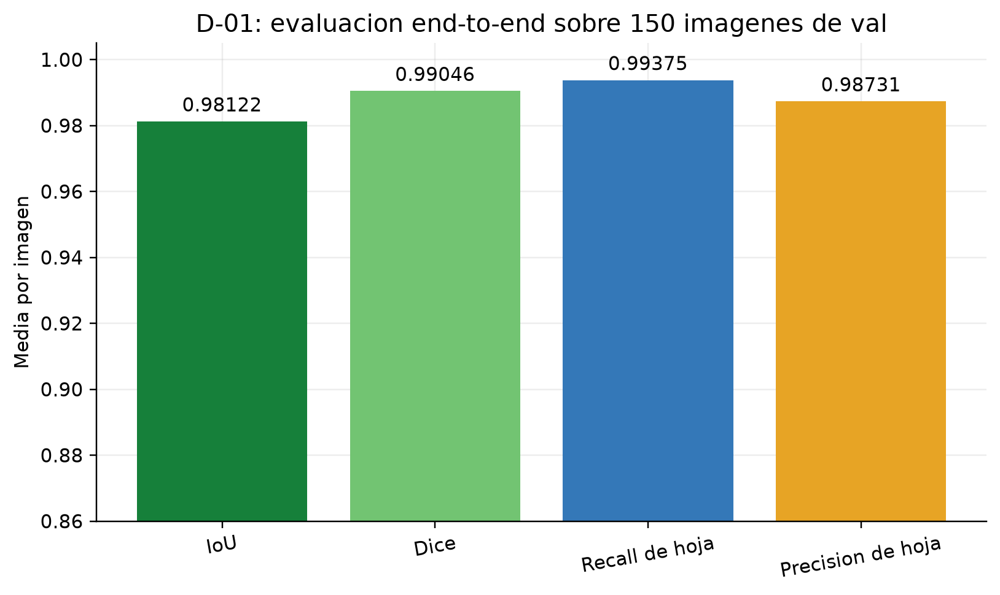
Los seis peores IoU se revisaron visualmente y mantuvieron una selección coherente. El caso más débil era horizontal, de 900×600, con fondo complejo: confianza 0.90661, recall 0.88589 e IoU 0.87546. Su 11.41% de tejido perdido explica por qué la media alta no elimina la necesidad de examinar colas.
Esta prueba aporta evidencia con ground truth, pero tiene tres límites. Proviene de validación y pudo influir en el desarrollo; sólo representa 150 imágenes de la fuente grande; y usa D-01 con una semilla. No sustituye el test interno ni el piloto externo. Además, la fuente pequeña corn, caracterizada por bordes frecuentes, no está representada en esta evaluación específica.
La corrida 2026-08-27_updated_hf_dataset procesó el corpus de enfermedades, plagas y deficiencias publicado en Hugging Face [7]. El inventario encontró 33,437 archivos válidos: 29,857 JPG, 3,573 JPEG y siete PNG. No hubo imágenes ilegibles. Se registraron cuatro duplicados distribuidos en cuatro grupos; la inferencia los conservó y dejó la deduplicación posterior al pipeline del clasificador.
La ejecución usó CPU, Ultralytics 8.4.104, imgsz=640, el perfil mask_black y el checkpoint C-01 con hash 4f66456d…f9c5ec6f. Inició con reutilización del inventario, se reanudó de forma compatible y terminó sin errores. run_metadata.json conserva ambos comandos, commit de dataset e515ab2f1e4c5729f8447520f1a630cf14c532dc, commit del proyecto, configuración completa y tiempos acumulados.
| Resultado | Imágenes | Porcentaje |
|---|---|---|
| Procesadas | 33,437 | 100.00% |
reliable | 28,360 | 84.82% |
uncertain | 1,057 | 3.16% |
failed | 4,020 | 12.02% |
| Salida segmentada publicada | 28,360 | 84.82% |
| Fallback a imagen completa | 5,077 | 15.18% |
| Errores de ejecución | 0 | 0.00% |
Las 29,417 imágenes con máscara seleccionada incluyen reliable y uncertain. Su área relativa media fue 0.68550 y la mediana 0.71829; el percentil 5 fue 0.18519 y el 95, 0.99604. La confianza media fue 0.94065 y la mediana 0.97484. Estas distribuciones son amplias: el corpus combina hojas pequeñas, encuadres cerrados y escenas donde casi todo el marco es tejido foliar.
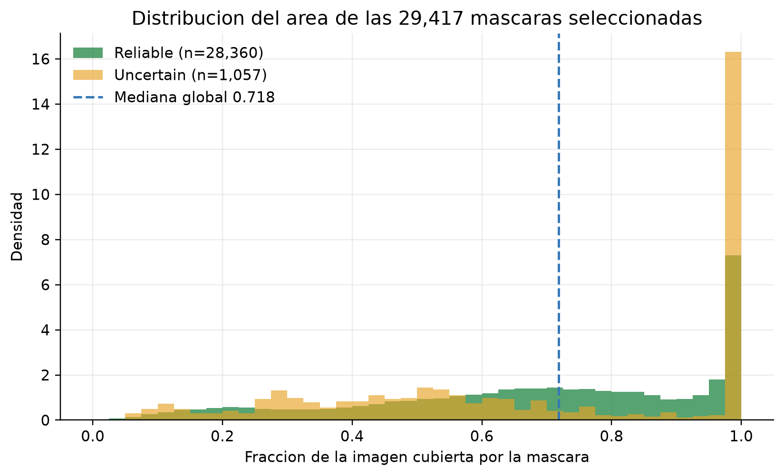
La inferencia del modelo sumó 5,265.25 segundos, con media de 157.47 ms por imagen. El tiempo de pared completo fue 11,330.30 segundos, aproximadamente 3 horas 8 minutos 50 segundos, lo que equivale a 2.95 imágenes por segundo incluyendo lectura, escritura, overlays, thumbnails y manifiestos. La mediana individual fue 78.16 ms; el percentil 95, 727.08 ms; y el máximo, 2,928.42 ms. La cola sugiere heterogeneidad de resolución y costes de I/O, por lo que la media no debe convertirse en un SLA móvil.
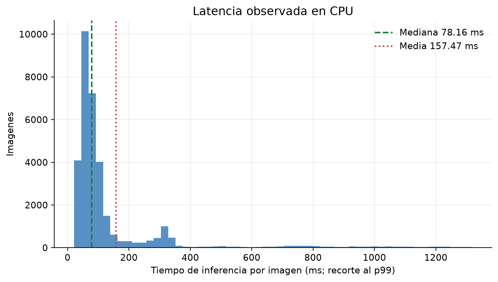
Por cada imagen se guardaron visualización de propuestas, máscara PNG, overlay, salida segmentada cuando existía, fallback enlazado cuando correspondía, cuatro thumbnails y JSON estructurado. Los manifiestos CSV y JSONL reúnen estado, clase, fuente, hashes, geometría, score, tiempo, warnings y rutas relativas. La galería permite revisar casos sin reconstruir inferencia.
run_metadata.json demuestra que utilizó C-01. Ejecutar D-01 sobre el mismo inventario permitiría una comparación pareada, pero no forma parte de la evidencia actual.La cobertura del gate no fue uniforme. Tizón norteño, mancha gris y roya superaron 93% de reliable; cogollero quedó en 52.65%, potasio en 73.75% y nitrógeno en 80.61%. Como el modelo no predice la clase de enfermedad, esta diferencia indica que la apariencia, escala, fondo o daño asociados a cada subconjunto afectan la detección de la hoja. No prueba que el segmentador “reconozca” unas enfermedades mejor que otras.
| Clase | Total | Reliable | Tasa | Uncertain | Failed |
|---|---|---|---|---|---|
| Roya común | 2,256 | 2,100 | 93.09% | 58 | 98 |
| Gusano cogollero | 4,857 | 2,557 | 52.65% | 246 | 2,054 |
| Mancha gris | 1,930 | 1,836 | 95.13% | 46 | 48 |
| Sana | 8,744 | 8,008 | 91.58% | 170 | 566 |
| Necrosis letal | 6,415 | 5,390 | 84.02% | 347 | 678 |
| Deficiencia de nitrógeno | 846 | 682 | 80.61% | 47 | 117 |
| Tizón norteño | 6,830 | 6,525 | 95.53% | 107 | 198 |
| Deficiencia de fósforo | 938 | 804 | 85.71% | 21 | 113 |
| Deficiencia de potasio | 621 | 458 | 73.75% | 15 | 148 |
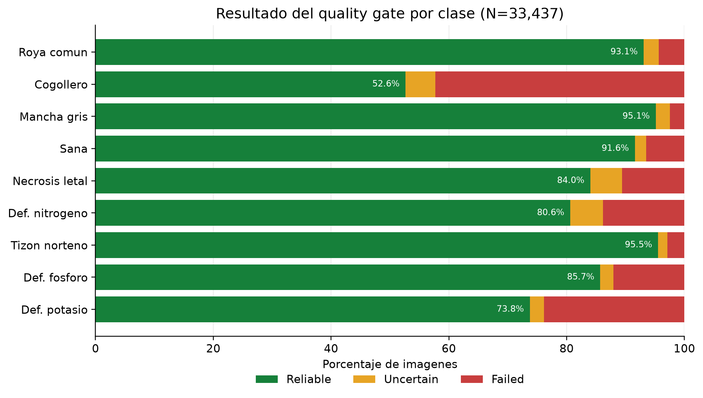
Los 5,077 casos no confiables se reparten exactamente entre seis razones. no_detection aporta 1,853; confianza inferior a 0.50, 1,385; máscara inválida, 782; margen ambiguo, 373; área excesiva, 373; y geometría grande sospechosa, 311. Las tres primeras producen failed; las tres últimas, uncertain.
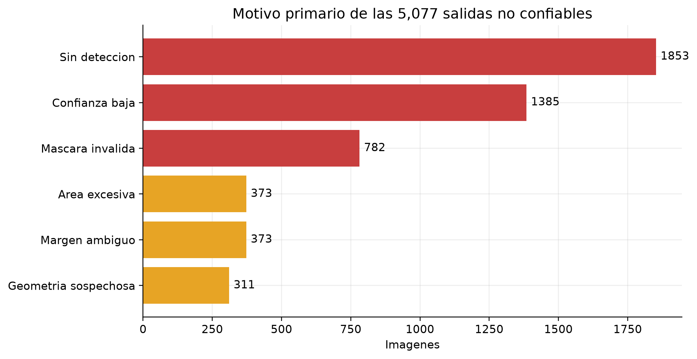
Cogollero concentra 1,333 ausencias de detección y 702 propuestas con confianza baja. Necrosis letal concentra 416 máscaras inválidas y 273 áreas excesivas. En hojas sanas aparecen 341 máscaras inválidas y 89 áreas excesivas. Estas concentraciones sugieren tipos de error diferentes: el primer grupo requiere mejorar recall del modelo; el segundo exige estudiar decodificación o degeneración de máscaras; el tercero puede involucrar encuadres donde la hoja llena casi todo el marco.
El panel siguiente no pretende estimar frecuencia. Muestra el contrato operativo: una salida confiable publica fondo neutral; una geometría sospechosa conserva artefactos de máscara pero devuelve el original; y una ausencia de detección genera máscara vacía y fallback.
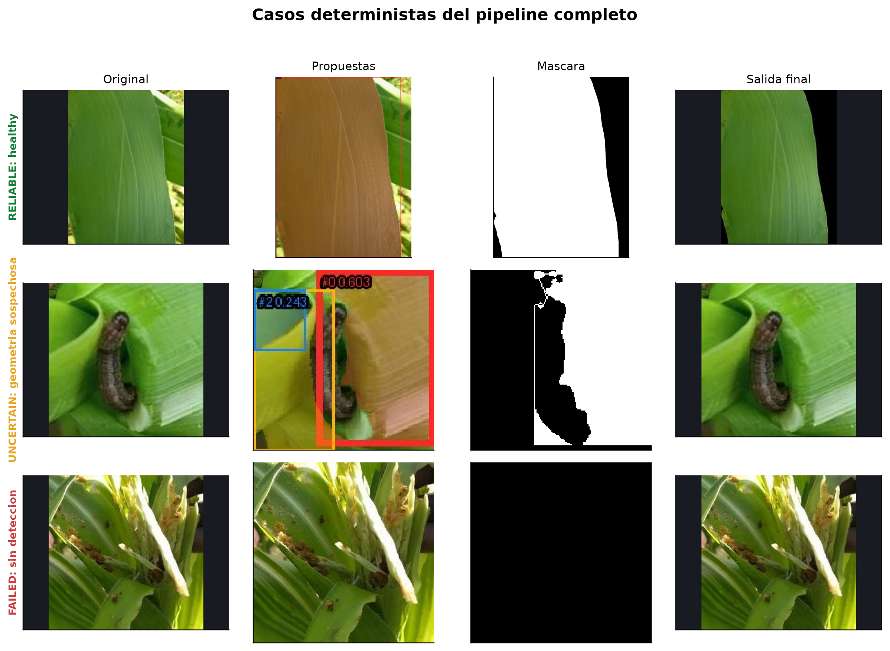
La siguiente recolección propuesta contiene 300 imágenes reales nuevas con daño severo de cogollero, oclusión, hojas parciales, hojas pequeñas, fondos complejos y varias hojas. El patrón masivo respalda esa prioridad, sobre todo para cogollero. Sin embargo, las nuevas imágenes deben tener máscaras humanas y separación por sesión de captura; usar predicciones del propio modelo como verdad de referencia amplificaría sus fallos.
export_classifier_dataset convierte una corrida terminada en un árbol <clase>/<entorno>/<image_id>.<extensión>. Por defecto incluye únicamente estados reliable, fija el entorno a lab para el layout esperado y materializa con hardlinks cuando origen y destino comparten filesystem. El proceso trabaja en un directorio temporal, escribe manifiesto, resumen y README, y sólo al final renombra atómicamente. Si la salida ya existe, se niega a sobrescribirla.
La exportación observada incluyó 28,360 imágenes y excluyó 5,077: 4,020 failed y 1,057 uncertain. El manifiesto fuente tiene SHA-256 1b672ca01e4a95f869a94677ddd1e7fe8eeb107e42f7b3f15358049b6ea43c12. Los hardlinks hacen el dataset autocontenido dentro del filesystem sin duplicar bytes, aunque el ZIP posterior sí ocupa 5.9 GB.
| Clase | Entrada | Exportada | Excluida | Retención |
|---|---|---|---|---|
| Roya común | 2,256 | 2,100 | 156 | 93.09% |
| Gusano cogollero | 4,857 | 2,557 | 2,300 | 52.65% |
| Mancha gris | 1,930 | 1,836 | 94 | 95.13% |
| Sana | 8,744 | 8,008 | 736 | 91.58% |
| Necrosis letal | 6,415 | 5,390 | 1,025 | 84.02% |
| Deficiencia de nitrógeno | 846 | 682 | 164 | 80.61% |
| Tizón norteño | 6,830 | 6,525 | 305 | 95.53% |
| Deficiencia de fósforo | 938 | 804 | 134 | 85.71% |
| Deficiencia de potasio | 621 | 458 | 163 | 73.75% |
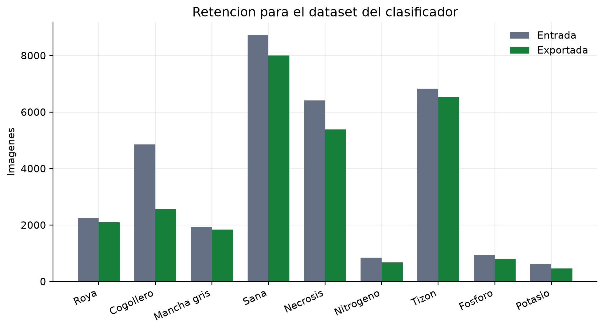
Este filtrado crea un posible sesgo de selección. Cogollero pierde casi la mitad de sus ejemplos, mientras tizón pierde menos de 5%. Si las imágenes rechazadas representan daño severo, fondos complejos u hojas pequeñas, entrenar sólo con las aceptadas puede eliminar precisamente la variabilidad que el diagnóstico necesita. Por eso el manifiesto de exclusiones debe conservarse y el clasificador debe comparar al menos tres protocolos: originales completos, segmentadas confiables y un esquema mixto con fallback explícito.
La exportación no demuestra mejora de clasificación. Su estructura es compatible y su procedencia es trazable, pero faltan experimentos pareados que mantengan splits y modelo del clasificador constantes. También debe verificarse que los cuatro duplicados del corpus se eliminen antes de crear splits clasificatorios; el segmentador los procesó a propósito y no es responsable de esa deduplicación downstream.
El consumidor debe leer reliability_status, output_mode, checkpoint y configuración, no inferir éxito a partir de la existencia de un JPG. Las imágenes uncertain y failed no deben desaparecer de las métricas operativas: aunque se excluyan del entrenamiento segmentado, son parte de la población real y deben medirse como fallback.
La reproducibilidad se apoya en identidades separadas para código, datos, configuración y pesos. El commit de Git describe el software; el commit del dataset identifica la publicación; los locks capturan contenido y membresía de splits; el SHA-256 del YAML fija thresholds; y el hash del checkpoint fija parámetros. Ninguna de estas identidades sustituye a las otras.
| Elemento | Identificador |
|---|---|
| Commit del repositorio en la corrida masiva | 985a920c5f3028ee81a7e0f7cd32507fa9b337c5 |
| Commit del corpus completo | e515ab2f1e4c5729f8447520f1a630cf14c532dc |
| Padre segmentado | 7a4a5c083fc64b067df12bcc95ec976d5a7e3b8a585d0a090b6b3940af4d7d5c |
| Asignación combinada de splits | 96833e43a46c959f0d5c86615b1d1ea6decb139063eea9c877986a61084c0e1 |
| Checkpoint C-01 | 4f66456d05d87f9e7080155eb5cd80c583f34849415ec820c950bd97f9c5ec6f |
| Checkpoint D-01 | a2bf4f201ca4f5e32c349cdc66d7ac39a6b012a330b182149401e533b2ecb8ab |
| Configuración de la corrida masiva | d537af08613441b5fe90a44bc9008004aca80b77c8d4c293c34efba6b1d5adc3 |
| Manifiesto de inferencia exportado | 1b672ca01e4a95f869a94677ddd1e7fe8eeb107e42f7b3f15358049b6ea43c12 |
Una corrida nueva falla si el directorio de salida existe. Una reanudación exige directorio previo, ausencia de summary.json, inventario compatible y mismo dataset root. Tampoco permite limit ni modo sólo inventario. Antes de continuar compara procedencia anterior con runtime actual y acumula tiempo de pared. Al terminar escribe summary.json; ese archivo convierte el run en cerrado para futuras reanudaciones.
La exportación al clasificador aplica un patrón similar: prepara un staging dentro del directorio padre y lo renombra únicamente después de escribir todos los artefactos. Ante una excepción elimina sólo el staging que acaba de crear. Esta atomicidad evita dejar un árbol aparentemente final con imágenes parciales.
La corrida completa registra el comando exacto y la reanudación. En forma abreviada:
python -m scripts.pipeline.infer_dataset \
--dataset /ruta/data/clean \
--metadata data/leaf_detection/external_sources/.../metadata.csv \
--dataset-commit e515ab2f... \
--output outputs/full_dataset_inference/2026-08-27_updated_hf_dataset \
--resume --progress-every 100
python -m scripts.pipeline.export_classifier_dataset \
outputs/full_dataset_inference/2026-08-27_updated_hf_datasetEl informe se regenera con generate_assets.py y build_report.py. El primer script vuelve a calcular gráficos desde manifest.csv; el segundo transforma las secciones Markdown en HTML y LaTeX. main.pdf se imprime desde el HTML con Chromium para no depender de una distribución TeX local. main.tex queda disponible para compilar con Tectonic o XeLaTeX.
image_id, ruta, clase, SHA-256, estado, razón, propuestas, score, geometría, tiempo, warnings y rutas de artefactos. El JSON individual añade configuración del gate y metadata completa del modelo.El índice estructural muestra una base de código amplia para el tamaño del modelo: 764 funciones, 331 métodos y 103 clases en Python, YAML, Bash, TypeScript, Vue, TOML y CSS. Los clústeres principales corresponden a procesamiento, inferencia masiva, consolidación, splits, revisión visual, control Modal y evaluación. Las fronteras más relevantes conectan segmentation con preprocessing, experiments con evaluation y experiments con preprocessing.
Las funciones centrales tienen responsabilidades acotadas. UltralyticsLeafSegmenter.segment sólo ejecuta y convierte inferencia; select_target_leaf puntúa y traza; SegmentedLeafProcessor.process materializa perfiles; assess_segmentation asigna estado; _process_one persiste artefactos; image_metrics calcula comparación por píxel; y export_classifier_dataset selecciona y publica de forma atómica. Este encadenamiento facilita probar cada política sin cargar un modelo real.
La suite completa se ejecutó con Python 3.12.3, sin caché de pytest y sin escribir bytecode. El resultado fue 349 pruebas aprobadas, cuatro fallidas y tres subtests aprobados en 19.05 segundos. Las cuatro fallas comparten una causa externa: el checkout no contiene data/leaf_detection/detector_dataset ni los 211 archivos del piloto que esperan las pruebas de empaquetado.
| Comprobación | Resultado | Interpretación |
|---|---|---|
ruff check | Aprobado | Sin hallazgos del linter |
| Pytest total | 349 pass, 4 fail | La lógica aislada aprueba; faltan datos canónicos |
| Test de status read-only | Falla por dataset_lock.json ausente | No observó una mutación |
| Verificación de payload cloud | Falla por dataset ausente | No recalculó fingerprints |
| Allow-list del paquete | Falla por images/train ausente | No llegó a evaluar inclusión |
| Manifiesto de transporte del piloto | Esperaba 211, obtuvo 0 | El piloto no está materializado |
No se corrigieron estas pruebas creando datos ficticios o debilitando asserts. Restaurar los artefactos canónicos es la solución apropiada. Las 349 aprobadas cubren, entre otros, geometría, máscaras, letterbox, selección, quality gate, calibración, inferencia por dataset, exportación, consolidación, splits, preflight, control cloud y seguridad del Makefile.
El flujo actual documenta pasadas repetidas sobre hashes y datos: los splits se materializan tres veces para probar determinismo; cloud-prepare recorre el payload en cuatro etapas; y el gate cloud verifica el paquete dos veces por corrida. Algunas duplicaciones son defensivas, pero elevan I/O sobre 2.3 GB. La comparación perceptual en build_split_groups es cuadrática sobre 1,155 elementos; es aceptable en el tamaño actual, pero necesitará indexación si crece sustancialmente.
También existe una dependencia rígida del nombre yolo26n_seg_baseline en scripts de validación. Una segunda corrida que Ultralytics renombre con sufijo podría dejar consumidores apuntando al primer directorio. D-01 evita ese choque con nombres propios, pero conviene que todos los consumidores resuelvan checkpoint por manifiesto y hash, no por ruta fija.
reliable reduce de forma desigual las clases; cogollero pierde 47.35% y potasio 26.25%.Restaurar data/leaf_detection/detector_dataset, el piloto y los outputs D-01 desde el almacenamiento autorizado. Verificar hashes antes de ejecutar cualquier experimento. Correr la suite completa y exigir 353 pruebas aprobadas más los tres subtests. Confirmar que el notebook eliminado y los módulos sin seguimiento reflejan decisiones intencionales.
Inspeccionar los dos polígonos con clase y bbox idénticos. La solución debe quedar en una ADR: corregir una anotación si es un duplicado semántico, representar explícitamente dos instancias si son distintas y la herramienta lo permite, o ajustar el contrato de evaluación con justificación. No debe desactivarse el guard únicamente para producir métricas.
Ejecutar E-01 con semillas 7 y 1337 usando exactamente los hiperparámetros ganadores de D-01. Reportar media, desviación estándar y curvas para recall foliar, Dice y Mask mAP50-95. Mantener test y piloto cerrados. Si la ganancia no supera variación, conservar C-01 o continuar con las ablaciones priorizadas.
Congelar checkpoint, configuración de inferencia y quality gate. Abrir el test interno una sola vez y producir resumen aprobado con fingerprint y hash de pesos. Sólo después ejecutar el piloto externo como auditoría cualitativa, sin usarlo para retocar thresholds. Publicar resultados por fuente, borde, resolución, área y número de hojas.
Muestrear de la corrida masiva casos reliable, uncertain y failed por clase y razón. Obtener máscaras humanas con doble revisión. Medir precisión de reliable, cobertura de máscaras buenas y falsos confiables. Incluir suficientes casos de cogollero, necrosis, potasio y fondos complejos.
Crear un estudio pareado con idénticos splits, arquitectura, semilla y entrenamiento del clasificador. Comparar originales, segmentadas C-01, segmentadas D-01 y política con fallback. Reportar macro-F1, resultados por clase y entorno, además de cobertura del segmentador. El objetivo no es maximizar una métrica aislada del segmentador, sino mejorar diagnóstico sin excluir casos difíciles.
Exportar el modelo al formato objetivo y medir latencia, memoria y equivalencia numérica en el dispositivo real. La API o app debe registrar versión, status, razón, tiempo y aceptación del usuario sin almacenar fotografías innecesariamente. Establecer umbrales de alerta si baja la tasa reliable o aumenta el fallback por clase.
| Gate | Criterio mínimo | Estado actual |
|---|---|---|
| Integridad local | Datos restaurados, hashes coincidentes, suite completa verde | Pendiente |
| Estabilidad | D-01 en tres semillas y mejora mayor que variación | Pendiente |
| Test interno | Ejecución única aprobada sobre 173 imágenes | Bloqueado |
| Piloto externo | Auditoría posterior al test | No ejecutado |
| Gate fuera de muestra | Precisión y cobertura en revisión humana nueva | Pendiente |
| Impacto downstream | Comparación controlada del clasificador | Pendiente |
| Dispositivo objetivo | Latencia, memoria y equivalencia verificadas | Pendiente |
El segmentador de Doctor Maíz presenta una arquitectura coherente para una función acotada: detectar instancias de hoja, escoger una objetivo, neutralizar fondo y rechazar salidas dudosas. Su valor técnico no proviene sólo de YOLO26n-seg, sino de las capas adicionales de trazabilidad: normalización, selección determinista, quality gate, fallback, manifiestos por imagen, hashes de configuración y pesos, y políticas de no sobrescritura.
La preparación del dataset es una fortaleza. Dos fuentes heterogéneas se auditaron a nivel sintáctico, topológico y semántico; se excluyeron 13,392 lesiones; se resolvieron casos humanos; y se congeló un padre de 1,155 imágenes y 1,224 máscaras. Los splits agrupan variantes y vecinos perceptuales, preservan proporciones 70/15/15 y documentan cero fugas conocidas contra el piloto.
D-01 aporta la mejor evidencia experimental disponible. Desactivar mosaic elevó el pico de Mask mAP50-95 de 0.93806 a 0.94399 con la misma semilla. El checkpoint validado reportó 0.94404 y el pipeline real obtuvo IoU 0.98122, Dice 0.99046 y recall foliar 0.99375 en 150 imágenes, sin fallbacks. Son resultados fuertes, pero continúan siendo validación de una sola semilla y una sola fuente.
La corrida masiva demuestra operación y revela el principal reto. C-01 procesó 33,437 imágenes sin errores de ejecución y publicó 28,360 máscaras confiables. Sin embargo, 5,077 casos usaron fallback y la cobertura varió de 52.65% a 95.53% según clase. Cogollero explica una gran parte de ausencias de detección y confianza baja. Esta heterogeneidad exige revisión humana estratificada y evita usar 84.82% como una medida de exactitud.
La integración con el clasificador es reproducible, pero introduce selección desigual. El subconjunto de 28,360 imágenes conserva sólo reliable, lo que puede eliminar casos difíciles y modificar la distribución clínica. Antes de adoptarlo como nuevo dataset de entrenamiento debe demostrarse, mediante un experimento pareado, que segmentar mejora el diagnóstico y no sacrifica las clases o condiciones más importantes.
El estado final es “candidato funcional con validación prometedora”, no “modelo final”. Faltan restaurar la evidencia local, resolver el conflicto 183/182, repetir D-01 con dos semillas adicionales, abrir test una vez, auditar el piloto, validar el gate fuera de muestra y medir el dispositivo objetivo. Mantener esos gates es una señal de calidad: el proyecto prefiere una conclusión incompleta pero verificable a una métrica final obtenida rompiendo su propio protocolo.